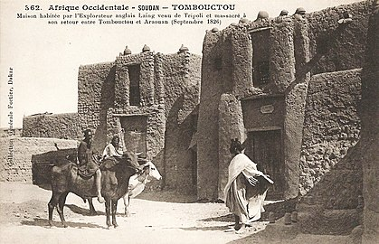
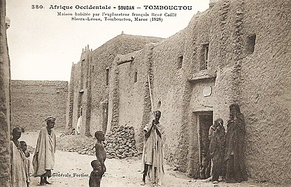
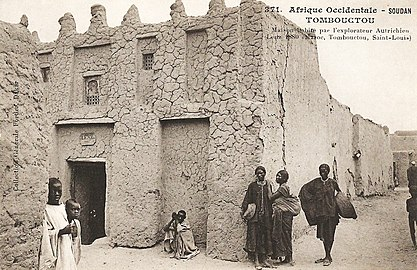
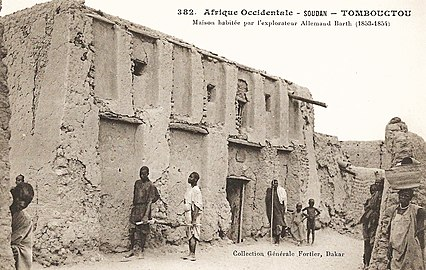
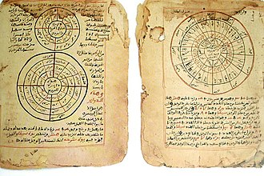

Histoire
Période de la colonisation française
L'Empire peul du Macina conquiert la ville en 1825. Après des siècles où Tombouctou est une cité recluse vis-à-vis de l'Occident – son entrée est interdite aux non-musulmans, sauf comme marchandise pour le trafic d'esclaves –, le major Alexander Gordon Laing est le premier Européen, après Paul Imbert au XVIe siècle, à visiter la ville en 1826, mais pris pour un marchand d'esclaves concurrent, il est assassiné. Le 20 avril 1828, c'est au tour du Français René Caillié d'entrer dans la cité, dissimulé sous le costume d'un lettré musulman, et d'en partir vivant. Son célèbre récit de voyage fait ensuite grand bruit en Europe. En 1810, un marin américain nommé Robert Adams, esclave des Maures, y aurait vécu quelques mois durant sa captivité. En 1844, à la mort de Sékou Amadou, la ville s'émancipe. L'explorateur allemand Heinrich Barth vient ensuite dans la ville où il passe six mois en 1853-1854. Il est suivi par d'autres explorateurs dont au milieu du xixe siècle, le rabbin Aby Serour qui y séjourne longuement dans les années 186012 ; le récit de ses explorations est publié dans le Bulletin de la Société de Géographie de Paris13.La seconde partie du xixe siècle marque le début de la colonisation française de l'Afrique occidentale, dans le sillage de l'Afrique du Nord. La conquête de la zone de Tombouctou par l'armée française se fait de manière heurtée, notamment en 1892 avec le massacre de la colonne Eugène Bonnier par les Touaregs Ouelleminden et Igdalen après la première occupation de Tombouctou par les Français. Lorsque les Français prennent le contrôle de la ville en 1894, sa population est d'environ 4 000 habitants14. Elle était dirigée jusque-là par une élite musulmane payant tribut aux Touaregs.
Après l'indépendance malienne
La loi du 2 mars 1966 donne un statut commun à toutes les communes créées avant l’indépendance du Mali en 1960. Un conseil municipal élu désigne en son sein le maire et un ou plusieurs adjoints.Lors d'une visite officielle à Tombouctou en février 1977, le président français Valéry Giscard d'Estaing appose une plaque à la mémoire du maréchal Joffre (qui y avait séjourné quand il était jeune commandant), et annonce une aide à la restauration de la maison de René Caillé. Il indique que la France est prête à apporter son concours pour faire face aux conséquences de la récente sécheresse En 1988, Tombouctou est inscrite au patrimoine mondial de l'Unesco pour ses richesses culturelles (mosquée, mausolées et manuscrits) et historiques. Le Nord du Mali et la ville sont à de nombreuses reprises secoués, à la fin des années 1960 et au début des années 1990, par des insurrections armées touaregs qui réclament plus d'autonomie et de désenclavement de leur région. Le 27 mars 1996 se déroule une cérémonie de la Flamme de la Paix, durant laquelle les rebelles touaregs brûlent 3 000 armes utilisées durant la rébellion.
Manuscrits de Tombouctou
Le vrai trésor de Tombouctou est constitué par un ensemble de près de cent mille manuscrits datant de la période impériale ouest-africaine (au temps de l'Empire du Ghana, de l'Empire du Mali et de l'Empire songhaï) détenus par les grandes familles de la ville. Ces manuscrits, dont certains datent de l'époque préislamique remontant au xiie siècle, sont conservés depuis des siècles comme des secrets de famille. Ils sont pour la plupart écrits en arabe ou en peul, par des savants originaires de l'ancien empire du Mali et contiennent un savoir didactique notamment dans les domaines de l'astronomie, de la musique, de la botanique… Des manuscrits plus récents couvrent les domaines du droit, des sciences, de l'histoire (avec d'inestimables documents comme le Tarikh el-Fettash (Chronique du chercheur) de Mahmud Kati sur l'histoire du Soudan au xve siècle et le Tarikh es-Sudan (Chronique du Soudan) d'Abderrahmane Es Saâdi au xviie siècle), de la religion, du commerce. Certains de ces textes gardent la trace de la tradition des grands jurisconsultes de l'Islam de l'Empire du Mali : Ahmed Baba - l'un des intellectuels les plus réputés du xvie siècle - est l'auteur d'un dictionnaire daté de 1596 présentant en particulier le fonctionnement des écoles et universités qui réunissaient 25 000 élèves et étudiants dans la ville de Tombouctou. L’Institut des hautes études et de recherches islamiques Ahmed Baba, a été inauguré en janvier 2009 par le président malien Amadou Toumani Touré, le président sud-africain, Kgalema Motlanthe et son prédécesseur Thabo Mbeki. Le coût des travaux d’un montant de 2,5 milliards de Francs CFA a été financé par l’Afrique du Sud. Construite sur la place Sankoré, sur le site de l'ancienne université Sankoré, les locaux de 4 800 m2 comprennent notamment un amphithéâtre de 500 places, une salle de conférence de 300 places et une bibliothèque.
Monuments

Tombouctou est aujourd'hui plus connue par sa légende que par les différents sites présents. Cependant, différents lieux sont dignes d'intérêt. La ville est inscrite sur la liste du patrimoine mondial de l'UNESCO depuis 1988. Première caractéristique de la ville, le désert est très proche des premières maisons. On trouve à différents endroits plusieurs zones de culture en terrasse, disposées en entonnoir autour d'un puits ou d'un point d'eau. Ces puits de Bouctou sont un bel exemple de culture dans un environnement difficile. L'ensemble des maisons est construit en banco mais à Tombouctou le crépi est remplacé par un parement en pierres. Les trois mosquées de la ville, Djingareyber, Sidi Yahiya et Sankoré, sont la mémoire de l'apogée de la ville. Seule la première se visite. On peut aussi visiter les restes des maisons qui abritèrent René Caillé, le major Alexander Gordon Laing et le docteur Heinrich Barth, dont certaines ont été transformées en musée. Une place abrite le monument « de la Flamme de la Paix » qui symbolise la fin de la rébellion touarègue, le 26 mars 1996. La cérémonie commémorative a lieu tous les ans. e 28 juin 2012, l'UNESCO classe la ville au patrimoine mondial en péril après sa prise par des islamistes radicaux. Visiblement en représailles de cette décision, au moins une trentaine de membres armés d'Ançar Dine ont commencé à détruire les mausolées jugés impies de la ville, devant une population non armée déconcertée. Le 1er juillet, sept des seize mausolées érigés pour certains des 333 saints que compte la ville sont déjà détruits, malgré l'indignation internationale. La procureur de la Cour pénale internationale (CPI), Fatou Bensouda qualifie les faits de « crime de guerre ». À partir de janvier 2015, l'UNESCO lance des travaux pour la restauration des 14 mausolées.